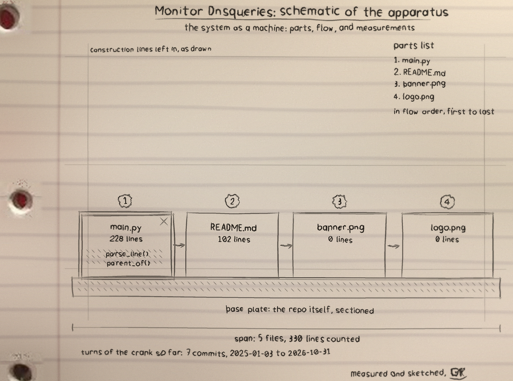

The logs I can read
dnsmasq and Pi-hole
The query[A] name from client lines a home or
office resolver writes all day.
BIND 9
The client ... query: name IN A lines from a
BIND query log.
Plain CSV
time, client, name, type, or the same without
the time. If a line fits none of these, I count it as not
understood instead of guessing.
One night's ledger, from the test fixture
The entries below are the tool's real output on its synthetic test log: 85 queries of ordinary traffic with a burst and a tunneling pattern planted in it. The watch caught both.
| Domain | Queries | Asked by |
|---|---|---|
| update.example.net | 55 | 192.168.1.50 |
| example.org | 2 | two clients |
| api.service.test | 2 | 192.168.1.13 |
| 22 distinct TXT names under example-cdn.com | 22 | 192.168.1.60 |
By type across the whole log: A=61, TXT=22, MX=1, AAAA=1. Two lines were not understood and were counted as such.
Watch notes: what earns a red mark
Every threshold behind these notes is a parameter. Your network's normal is not mine to decide.
Take a shift
python3 main.py /var/log/dnsmasq.log
Python 3, standard library only. A log with no parseable queries fails with exit code 2 rather than reporting a quiet night it never actually saw. Full documentation: the repository.
The apparatus
